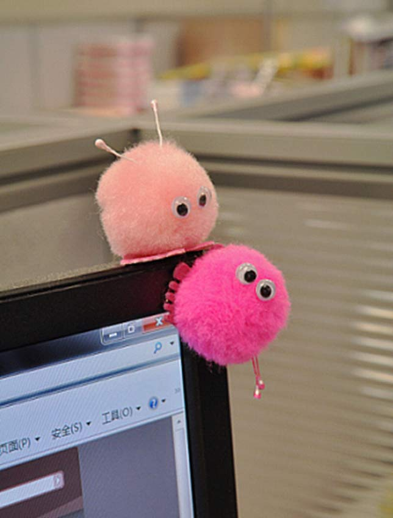
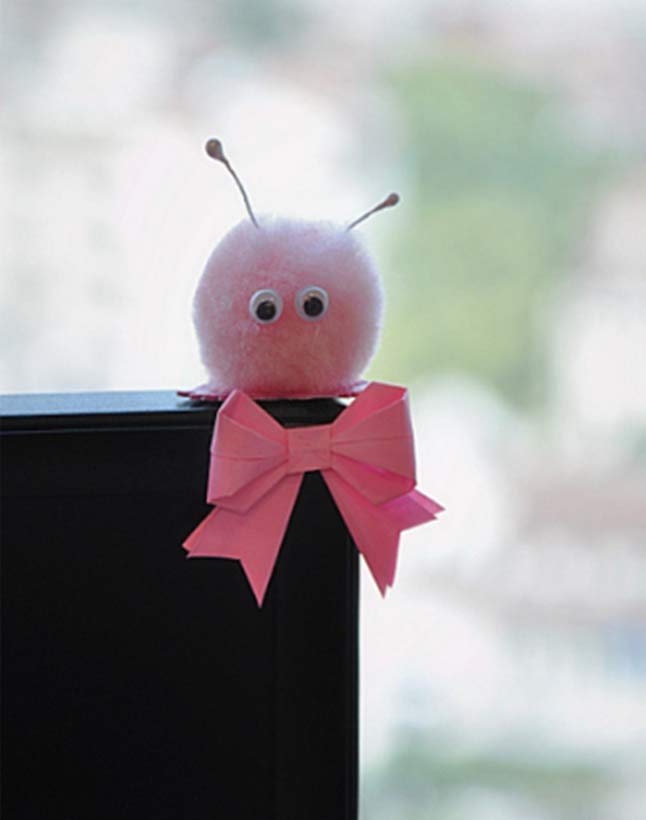

暖和软毛是来源于很久以前的一个可爱故事，故事是讲述隐居在山谷里的许多幸福的人们，他们没有电视机，没有汉堡包，没有高尔夫球场。他们不知道必须有这些东西才会幸福。每当山谷里的人们相遇时，他们互赠暖和的软毛，这样的交换给他们带来很大的快乐。显然，这表示他们相互地关心着。

一天，一个邪恶的老巫婆从幸福山谷飞过，她看见人们相互拥抱、亲吻，她想：“多么可笑！我要下去告诉这些人世界上其它地方是怎么样的！”于是，她飞下去，散播谣言，说暖和软毛要短缺了！作为人类，幸福山谷的人们和其他人一样做出反应，他们回到家把暖和软毛藏在黑黑的衣柜里，并避免大家相互见面，以此来保存他们的暖和软毛，很快人们之间开始相互不信任。恐怖、仇恨、孤独第一次向人们袭来。没有温暖的日子年复一年，不久幸福山谷变得和世界其它地方一样，他们也开始用赠送电动咖啡壶作为婚礼礼物，从此代替了暖和的软毛。

然后有一天，一位善良的老奶奶告诉她的孙儿们有关“过去的好时光”——人们彼此相爱，彼此赠送暖和的软毛。孩子们听了非常兴奋，他们走出去，搜寻他们可以找到的仅有的旧的暖和软毛，并开始相互赠送。绒毛越来越多，大人们看见孩子们非常开心，于是他们又开始相互赠送软毛了。不久，山谷又回到原来的情形，人们彼此相爱，相互关心。